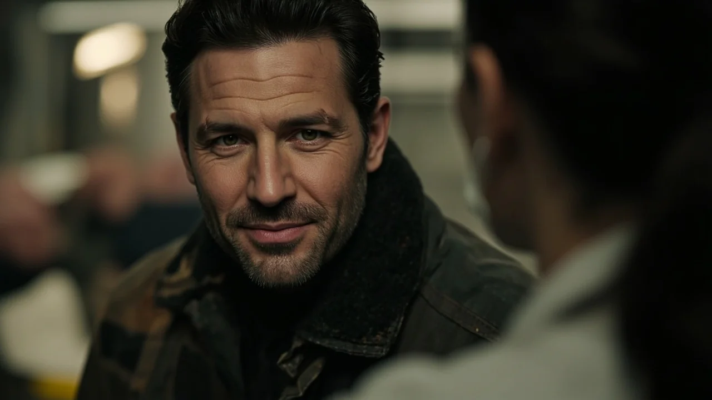
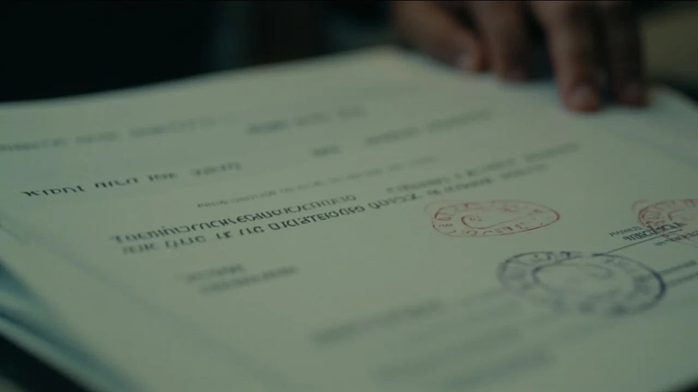
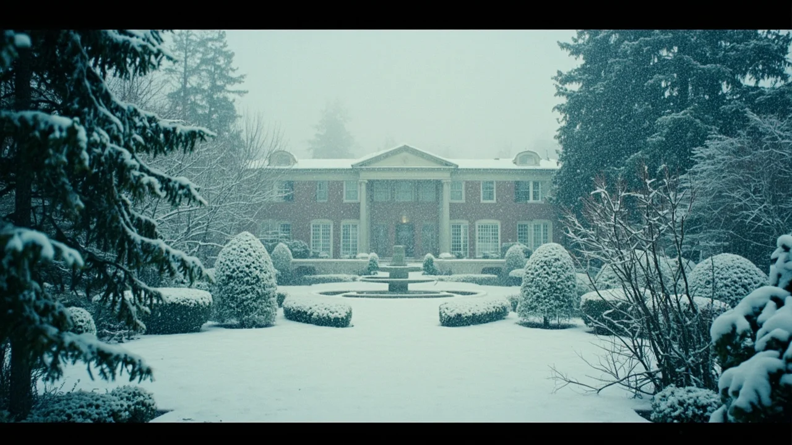

El timbre del box de reanimación no sonaba: aullaba contra los azulejos del pasillo. Eran las tres y cuarto de la madrugada cuando dos camilleros empujaron las puertas de urgencias trayendo a un bombero cubierto de hollín. Llevaba el uniforme rasgado en los hombros y las manos tiznadas, pero lo que alarmaba a los sanitarios era el silbido ronco de sus pulmones tras rescatar a dos niños en un edificio en llamas.
Lucía actuó sin dudar. Cortó la manga de la chaqueta de faena, canalizó una vía periférica y le ajustó la mascarilla de oxígeno al cien por cien. Mientras lavaba las quemaduras de los antebrazos con suero templado, aquel hombre abrió unos ojos color miel que brillaban entre el polvo negro. No protestó; solo rozó la muñeca enguantada de la médica.
—Los pequeños… —susurró con voz rota—. ¿Están bien?
—A salvo en pediatría —contestó Lucía, apartándole un mechón chamuscado—. Ahora respira despacio. Nos toca cuidarte a nosotros.
El bombero se llamaba Andrés Salgado. Pasó dos días en observación y, tres semanas más tarde, reapareció en la sala de médicos con una caja de pastas de mantequilla. Lucía salía de una guardia de veinticuatro horas, ojerosa y con el pelo revuelto. Compartieron un café intragable de máquina mientras el sol de las siete despuntaba entre los tejados. Andrés escuchaba con una calma insólita, como si el estruendo de las sirenas quedara amortiguado a su lado.
Aquella mañana selló una costumbre que pronto se volvió indispensable. Llegaron cenas tardías en tabernas tranquilas, paseos por la escollera con el salitre en la cara y escapadas de fin de semana en una cabaña de madera entre robles. Andrés aprendió a descifrar el cansancio de Lucía cuando apoyaba la frente en su hombro; ella aprendió a acariciar cada cicatriz que el fuego le había dejado en los brazos.
Dos años después de aquella guardia, en lo alto del mirador del faro donde el viento mecía los pinos, Andrés abrió una cajita de terciopelo. El anillo era una banda delgada de oro blanco con una pequeña piedra engastada. Lucía lo abrazó con tanta fuerza que los botones de la trenca de él quedaron marcados en su mejilla, y fijaron la boda para la primavera siguiente.
Pero a finales de noviembre, las sombras se deslizaron en su rutina.
La primera señal pareció un descuido por fatiga: Lucía recetó una dosis pediátrica de antibiótico a un adulto mayor. Marta, su compañera de turno, corrigió la orden en la farmacia con una broma ligera. Tres días después, Lucía subió a su coche tras salir del hospital y permaneció cuarenta minutos inmóvil frente al volante en el aparcamiento, incapaz de recordar el camino a casa. Un frío repentino le empapó la nuca mientras las luces fluorescentes zumbaban en el techo.

Ocultó el episodio alegando jaquecas, pero acudió en secreto a neurología. Tras semanas de resonancias y punciones, el especialista dictó una sentencia inapelable: una variante presenil y agresiva de deterioro neurodegenerativo. En pocos meses perdería el lenguaje, la orientación y la capacidad de valerse por sí misma.
—Tienes treinta y cuatro años, Lucía —le dijo el neurólogo con pesar—. La atrofia en los lóbulos temporal y parietal avanza deprisa. Debes tramitar la incapacidad de inmediato.
Lucía caminó sola durante horas junto a la orilla del río. Pensó en Andrés: en sus treinta y seis años llenos de proyectos, en su risa limpia y en la ilusión con que hablaba de los hijos que tendrían. Se imaginó convertida en una sombra vacía, robándole la juventud al hombre de su vida. Jamás permitiría que él pasara sus mejores años limpiándole la boca o sujetando a una desconocida con su rostro.
La ruptura ocurrió un martes bajo una llovizna fría. Andrés llegó a la cocina con una barra de pan caliente y encontró dos cajas de cartón con todas sus pertenencias apiladas junto a la puerta.
Lucía lo esperaba de pie. Se había pintado los labios de rojo oscuro y vestía una camisa de seda que rara vez usaba, una coraza para esconder el temblor que le atenazaba el cuerpo.
—Tenemos que hablar, Andrés —dijo con voz gélida, ensayada durante noches en vela—. No habrá boda.
—¿Qué ocurre? ¿Ha pasado algo grave?
—Ocurre que me equivoqué. Me dejé llevar por la costumbre, pero no estoy enamorada de ti. Llevo meses viéndome con un compañero de traumatología. Lo que siento por él no lo he sentido jamás contigo, y no voy a atarme por lástima.
Andrés palideció por completo. Sus ojos buscaron un quiebro en la mirada de ella, pero Lucía apretó las uñas contra las palmas de sus manos dentro de los bolsillos con tanta fuerza que casi se abrió la piel.
—Lucía, eso no tiene sentido —balbuceó él—. Hace tres días elegíamos las maderas de la casa. Mírame a los ojos y dime la verdad.
—Te estoy mirando —sostuvo ella con una dureza implacable que le desgarró el pecho—. Coge tus cosas y vete. No me llames y no vuelvas a pisar esta casa. No quiero verte nunca más.
Andrés permaneció callado un minuto interminable, respirando con dificultad. Luego levantó las dos cajas y cruzó el umbral sin volver la vista atrás. El golpe de la puerta retumbó como un trueno. Al oír desvanecerse sus pasos en la escalera, Lucía cayó de rodillas sobre las baldosas, mordiéndose los nudillos para ahogar los sollozos.
Doscientas horas después, incapaz de respirar aquel aire cargado de recuerdos, Andrés pidió el traslado voluntario a la costa levantina.
Pasó un año y medio. En el parque de bomberos del este, donde Andrés agotaba los días entre turnos dobles, el móvil sonó a medianoche. Era Marta Varela.
—Andrés, me da igual lo que me hiciera jurar —dijo la médica con la voz quebrada por el llanto—. No puedo callarme más.
—Marta, déjalo. Ella eligió rehacer su vida.
—¡Lucía no está con nadie! —estalló Marta—. Esta mañana revisé su expediente de incapacidad en gerencia. Tiene una demencia degenerativa precoz. Todo fue una mentira para alejarte y no arruinarte el futuro. Lleva seis meses ingresada en la residencia El Pinar, a las afueras. Apenas recuerda vestirse sola, Andrés.
El teléfono resbaló de su mano. Andrés no recogió una sola maleta: bajó al garaje, arrancó la furgoneta y condujo quinientos kilómetros bajo la lluvia torrencial sin detenerse hasta llegar a los bosques de la sierra norte.

El Pinar era una antigua casona señorial envuelta en pinos y silencio. En la galería acristalada, sentada junto al ventanal que daba al jardín otoñal, encontró a Lucía. Llevaba un jersey ancho de lana color lavanda y zapatillas suaves. Sus manos descansaban quietas sobre una manta. Su mirada, antes viva y penetrante, estaba envuelta en una neblina densa y mansa.
Andrés cayó de rodillas frente a su butaca, con el pecho sacudido por el llanto. Le tomó los dedos fríos entre las manos.
—Lucía… —gimió con la voz partida—. Ya estoy aquí. Perdóname por haberme marchado.
Ella ladeó la cabeza despacio y lo observó con una curiosidad ingenua, limpia de reproches.
—Buenos días —dijo en un hilo de voz—. ¿Es usted el médico nuevo? Las pastillas rojas ya me las han dado después del almuerzo.
A Andrés se le desgarró el alma en silencio. Tragó saliva, se enjugó las lágrimas con la manga de la cazadora y forzó la sonrisa más tierna de su vida.
—No soy médico, Lucía —le respondió con infinita dulzura—. Me llamo Andrés. Y he venido a hacerte compañía.
A la mañana siguiente, Andrés solicitó su reincorporación al parque comarcal. Alquiló un piso pequeño a pocos minutos de El Pinar y comenzó una rutina inquebrantable.
Cada tarde a las cuatro, cruzaba las puertas acristaladas de la residencia. Nunca llegaba vacío: traía manzanas que pelaba con paciencia en gajos finos sobre una servilleta, pequeños ramilletes de lilas silvestres o trozos de chocolate negro que colocaba en la mano de Lucía.

Se sentaba a su vera sin exigirle jamás un recuerdo. No le hablaba del incendio, ni del mirador, ni del anillo que aún guardaba en el bolsillo. Abría *El largo viaje*, aquella novela de tapas azules que ella le regaló en su primer aniversario, y le leía fragmentos enteros con una cadencia sosegada que llenaba la sala de calma.
Había tardes en que Lucía escuchaba sonriendo a los árboles, tarareando notas sueltas. Otras veces permanecía ausente, ajena al mundo y a las palabras. Pero incluso en los días más grises, dejaba que Andrés le arropara las piernas y sostuviera sus dedos helados entre sus palmas curtidas.
A finales de enero, una nevada cubrió de blanco los senderos del jardín. Andrés acababa de cerrar el libro tras leer el pasaje en que los marineros regresan a puerto. Guardó silencio y tomó la mano de Lucía, acariciándole el dorso.
De pronto, los dedos de ella se cerraron sobre los suyos con fuerza.
Lucía giró la cabeza. El velo ceniciento de sus ojos pareció disiparse por un instante milagroso, atravesado por una luz limpia y remota. Lo miró directo al fondo de las pupilas y una lágrima rodó por su mejilla.
—Andrés… —susurró con una nitidez asombrosa—. Tú me quisiste mucho, ¿verdad?
A él se le encogió el corazón con un dolor inmenso y hermoso. Se inclinó sobre ella, apoyando su frente contra la suya.
—Te quise con toda mi alma, Lucía —respondió ahogado por la emoción—. Y te sigo queriendo cada segundo de mi vida.
Lucía sonrió con una dulzura infinita, cerró los ojos y apoyó la cabeza en su hombro, exhalando un suspiro largo y sereno.
—¿Vendrás mañana? —preguntó adormilada.
—Mañana y siempre —prometió él—. Aquí estaré a las cuatro.
Esa misma madrugada, una parada cardiorrespiratoria apagó la vida de Lucía mientras dormía en paz.
Cuando Andrés llegó a las cuatro de la tarde con un ramo de lilas frescas, el silencio en el vestíbulo de la residencia era denso. La recepcionista bajó la mirada con los ojos encharcados.
Andrés subió al primer piso con el pulso desbocado. La puerta de la habitación catorce estaba abierta de par en par. La cama lucía deshecha, con el colchón al desnudo y las mantas retiradas. El sillón junto a la ventana estaba vacío, bañado por la luz del atardecer.
La supervisora se acercó despacio por el corredor. Con un gesto respetuoso, extrajo de su bata un cuaderno pequeño de tapas de hule negro y esquinas rozadas, poniéndolo en las manos de Andrés.
—Estaba bajo su almohada —le dijo en voz baja—. Llevaba meses escribiendo en él cada noche antes de dormir, solo cuando tenía algún momento de lucidez. Quería que fuese para usted.
Andrés se sentó en el alféizar de la ventana, con las flores sobre el regazo, y abrió la libreta. Las primeras hojas mostraban palabras sueltas, listas inconexas de nombres tachados y dibujos torpes de plantas. Más adelante, los renglones se volvían temblorosos, vencidos por el deterioro.
Pero en la última página escrita, trazadas con tinta azul en una línea vacilante pero firme, había unas pocas palabras anotadas la tarde anterior:
*«Hay un hombre que viene a verme cada día. No recuerdo su nombre, pero cuando me toma de la mano siento que estoy en casa»*.
Andrés apretó el cuaderno contra su pecho y se dejó vencer por el llanto en la estancia silenciosa. Sacó del bolsillo de su cazadora el anillo de oro blanco y lo guardó entre las páginas gastadas, cerrándolo para siempre.
Comprendió entonces que la enfermedad le había robado a Lucía sus recuerdos y sus palabras, pero jamás había podido borrar la huella de su amor. Salió al jardín nevado bajo la primera luz de las estrellas, sabiendo que, mientras él siguiera vivo, Lucía nunca estaría sola.